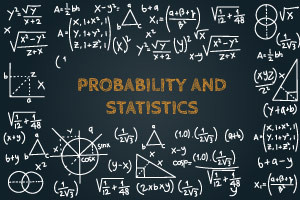

Welcome to J's studying page
Probability is the branch of mathematics concerning numerical descriptions of how likely an event is to occur or how likely it is that a proposition is true.
The probability of an event is a number between 0 and 1, where, roughly speaking, 0 indicates impossibility of the event and 1 indicates certainty. The higher the probability of an event, the more likely it is that the event will occur.
These concepts have been given an axiomatic mathematical formalization in probability theory, which is used widely in such areas of study as mathematics, statistics, finance, gambling, science (in particular physics), artificial intelligence/machine learning, computer science, game theory, and philosophy to, for example, draw inferences about the expected frequency of events. Probability theory is also used to describe the underlying mechanics and regularities of complex systems.
